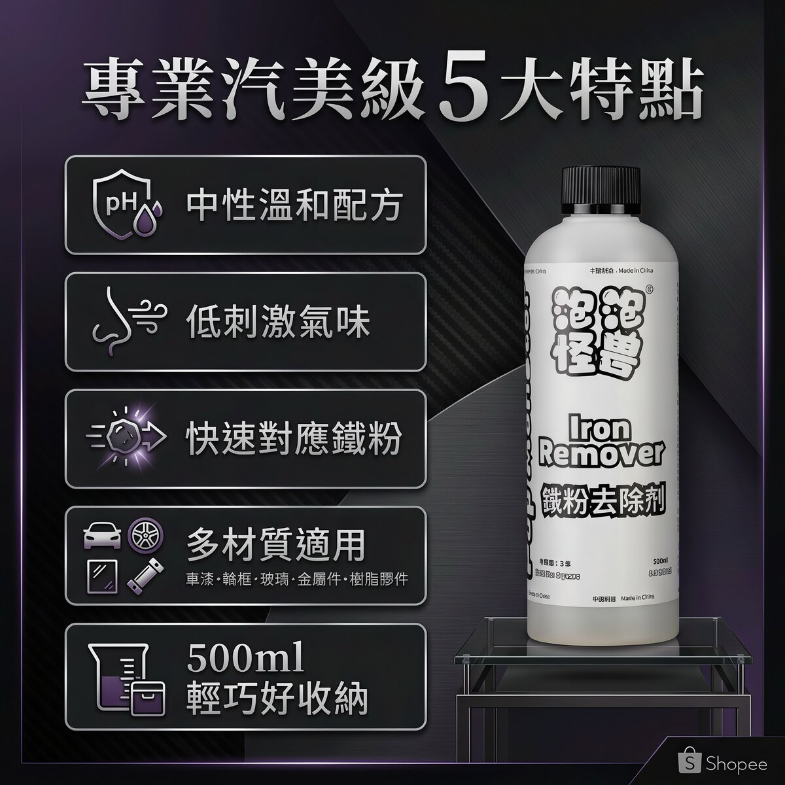

铁粉清洁剂
去铁粉用的清洁剂：喷上、静置三分钟、高压水冲掉，不用刷。漆面、轮圈、玻璃、金属都能喷。
加入购物车 → 填收件资料 → 用 WhatsApp 送出订单；每款能不能寄到你的国家、运费多少，小编会先在 WhatsApp 确认，再请你付款
产品说明
轮圈缝隙卡黑、煞车粉尘怎幺洗都在、漆面摸起来粗粗的、指甲抠也抠不下来——那是铁粉，一般洗车精带不走。铁粉清洁剂是去污流程的第一道：喷上去、静置三分钟、高压水冲干净，不用搓也不用刷。漆面、轮圈、玻璃、金属都能喷。同一天还要做黏土或玻璃油膜的话，也是先把铁粉这一道做完再往下走。
规格
- 稀释比例
- 请依瓶身标示为准，或在 WhatsApp 向小编确认后再使用
- 适用材质
- 漆面、轮圈、玻璃、金属；橡胶条与塑料饰件可接触，建议缩短停留时间并确实冲净
怎幺用
- 将产品喷洒在要处理的部位（车身、轮圈）。
- 静置 3 分钟。
- 以高压水冲洗干净，不用搓也不用刷，冲到铁粉完全带走为止。
- 同一天要接黏土或玻璃油膜的话，铁粉排在最前面；冲水收干后再检查一次，确认干净了再进下一道。
注意事项
- 材质兼容性目前只有配方端的说法，没有第三方实测报告；不确定的材质请先在不显眼处小面积试喷再全面施作。
- 橡胶条与塑料饰件虽在适用范围内，仍建议缩短停留时间并确实冲净，不要让药剂长时间停留。
- 不要在烈日下或车身高温时施工，也不要让药剂干在漆面上；施工后务必用大量清水完全冲净。
- 稀释比例目前以瓶身标示为准；不确定请先在 WhatsApp 向小编确认，不要自行推估。
- pH 值、成分表与安全数据表（SDS）目前尚未提供；若你的工作环境需要这些文档，请先在 WhatsApp 确认再采购。
- 施工时请配戴手套并保持通风。不慎接触眼睛或皮肤时，立即用大量清水冲洗，不适请就医。
- 请勿与其他清洁剂混合使用。
- 接在铁粉之后的黏土（火山泥）作业一定要搭配润滑液，不要只用清水揉搓，否则容易在漆面留下刮痕。
- 存放于阴凉避光处，放在儿童拿不到的地方，不可吞食。
常见问题
建议每 3–6 个月做一次。住在工业区附近、常走高速公路的车辆因铁粉累积较快，可缩短至每 2–3 个月一次。变色越深代表需求越迫切。
可以，而且特别有效。轮圈是煞车粉尘（铁粉）最集中的区域，建议轮圈单独做一次铁粉处理，效果最明显。
铁粉会持续氧化腐蚀车漆和轮圈，是车漆失去光泽的主要原因之一。长期不处理可能造成难以修复的橙皮痕（铁粉锈点）。
同类商品


铁粉清洁剂
确定要买就加入购物车，用 WhatsApp 送出订单；还不确定适不适合你的车，先在 WhatsApp 问清楚再下单。